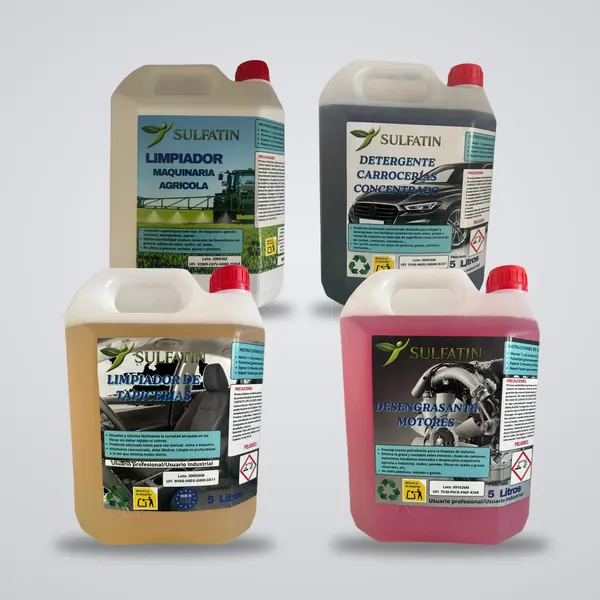
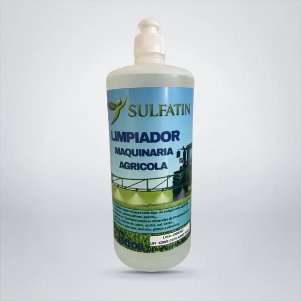
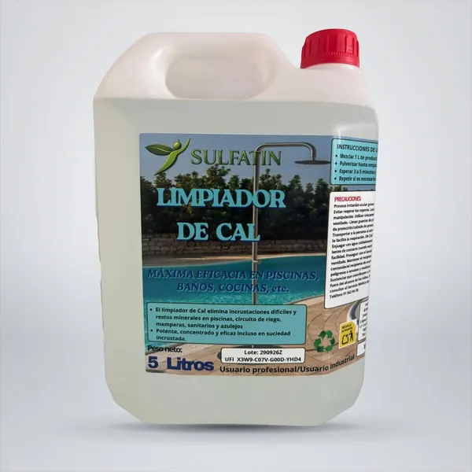
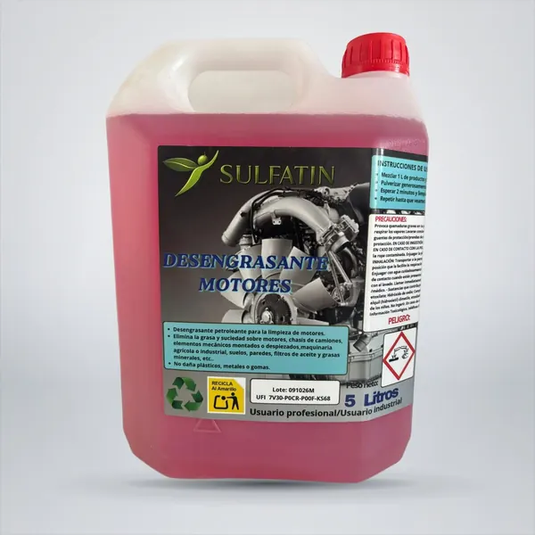
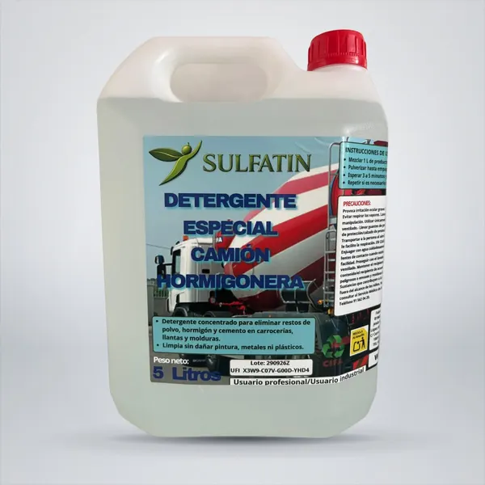

Pack Sulfatín personalizado 4x5L134,95 € IVA incluido
Inicio / La tienda / Limpiador Agrícola 1L

Elimina con gran facilidad suciedad de origen mineral: sulfato de cobre, azufre, cal, así como óxidos y otros. Sulfatín 1 Litro se puede utilizar en limpieza de cualquier tipo de maquinaria agrícola. No contiene ácido fluorhídrico, nítrico ni clorhídrico. NUEVA FÓRMULA MEJORADA.
El formato para probar Sulfatín
La botella de 1 litro es la manera más barata de comprobar en tu propia máquina lo que hace el producto. Es el mismo limpiador que la garrafa de 5 litros, en un envase pensado para una limpieza puntual, para explotaciones pequeñas o para tenerlo de repuesto en el taller.
Disuelve la suciedad de origen mineral que queda después de los tratamientos:
Sulfato de cobre y restos de caldos fitosanitarios
Azufre, cal e incrustaciones minerales
Óxido superficial en chapa, bastidores y depósitos
Vale para atomizadores, pulverizadores, cubas, tractores y maquinaria industrial. No contiene ácido fluorhídrico, nítrico ni clorhídrico: limpia sin atacar la pintura, los plásticos ni las juntas del circuito.
Cuánto rinde una botella de 1 litro
Con la dilución recomendada de 1 litro de producto por cada 5 de agua, esta botella da 6 litros de mezcla. Es suficiente para una limpieza completa de un equipo de tamaño medio o para varias limpiezas de mantenimiento de boquillas y filtros.
Si prevés limpiar más de una vez en la campaña, sale más a cuenta la garrafa de 5 litros: rinde 30 litros de mezcla y el litro de producto te queda bastante más barato.
Cómo se aplica
Diluir: 1 litro de Sulfatín por cada 5 litros de agua.
Pulverizar: empapar todas las zonas con restos.
Dejar actuar: entre 5 y 10 minutos.
Aclarar: con abundante agua.
Con suciedad muy incrustada, mejor repetir el proceso dos o tres veces con la mezcla diluida que usar el producto puro. Nunca sobre superficies calientes ni a pleno sol: la disolución se evapora antes de actuar.
Lo tienes explicado con vídeo en modo de empleo y aplicado a un caso real en cómo limpiar un atomizador.
Datos técnicos
Formato: botella de 1 litro
Dilución recomendada: 1 parte de producto por 5 de agua
Rendimiento: 6 litros de mezcla
Densidad relativa: 1,24 g/c.c.
Totalmente soluble en agua
Conservación: hasta 24 meses
Nueva fórmula mejorada
Otros formatos
Para uso habitual, la garrafa de 5 litros. Para toda una campaña o varias máquinas, el pack de 4 garrafas con envío incluido. Si necesitas varias botellas de litro, la caja de 12 botellas sale más económica. Toda la gama, en limpiador agrícola.
Preguntas frecuentes
¿Es el mismo producto que la garrafa de 5 litros?
Sí, es exactamente el mismo limpiador. Solo cambia el envase: la botella de 1 litro está pensada para una limpieza puntual o para probarlo.
¿Cuánto rinde una botella de 1 litro?
Con la dilución de 1 parte de producto por 5 de agua, da 6 litros de mezcla, suficiente para una limpieza completa de un equipo de tamaño medio.
¿Daña la pintura, los plásticos o las juntas?
No. Sulfatín no contiene ácido fluorhídrico, nítrico ni clorhídrico, que son los que atacan pinturas y componentes. Disuelve la suciedad mineral sin agredir la chapa, los plásticos ni las juntas del circuito.
¿Quita el sulfato de cobre ya cristalizado?
Sí. Cuando el sulfato lleva tiempo cristalizado, funciona mejor repetir la aplicación dos o tres veces con la mezcla diluida que usar el producto puro.
¿Cuánto tiempo hay que dejarlo actuar?
Entre 5 y 10 minutos después de pulverizar, y luego aclarar con abundante agua.
¿Puedo aplicarlo con la máquina al sol?
Envío. Gratuito en los packs de 4 garrafas y en la caja de 12 botellas.
Devoluciones. 14 días naturales desde que lo recibes. Al ser productos químicos, solo envases sin abrir y con su precinto.
Dudas. WhatsApp 667 72 05 45 o info@sulfatin.es. De lunes a viernes, de 9:00 a 17:00.

Pack Sulfatín personalizado 4x5L
Limpiador de cal 5 L
Desengrasante de motores 5 L
Detergente Especial Camión Hormigonera 5 L